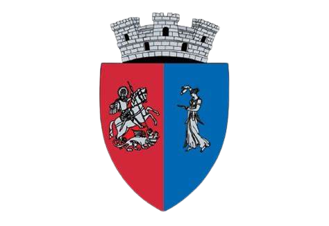

Asociația Clubul Sportiv Hebe Sîngeorz-Băi este o echipă de fotbal din orașul Sângeorz-Băi, județul Bistrița-Năsăud, România.
Echipa activează în al 4-lea eșalon al Federației Române de Fotbal, regiunea Bistrița-Năsăud NORD. Momentan, clubul ocupă locul 7 cu 4 puncte după 12 meciuri jucate.
Palmares
Liga a IV-a Bistrița-Năsăud:
Campioana(3):
*1976-1977
*1986-1987
*1989-1990
Stadion: Complex Sportiv Orășenesc Sîngeorz-Băi
Locație stadion: Strada Someșului 3, Sângeorz-Băi 425300, România
Stema echipei

Stema echipei este aceeași cu cea a orașului și este compusă din:
Primul element central, scutul care are marginile rotunjite, iar deasupra sa e desenată o coroană cu trei elemente de tip turn. Aceasta simbolizează faptul că Sângeorz-Băi are rangul de oraș. Sfântul Gheorghe este reprezentat pe stema echipei în partea stângă, surprins în plină mișcare, străpungând cu sulița balaurul.
Al doilea element principal al stemei echipei este vorba despre un simbol desprins din mitologia greacă. Zeița Hebe este considerată păstrătoarea elixirului tinereții veșnice și a vieții fără de moarte. Pe stema echipei este întruchipată de o tânără îndreptată cu fața spre stânga, ținând în mâna stângă un vas ritualic din care toarnă nectarul tinereții fără bătrânețe.